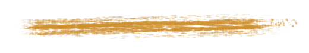
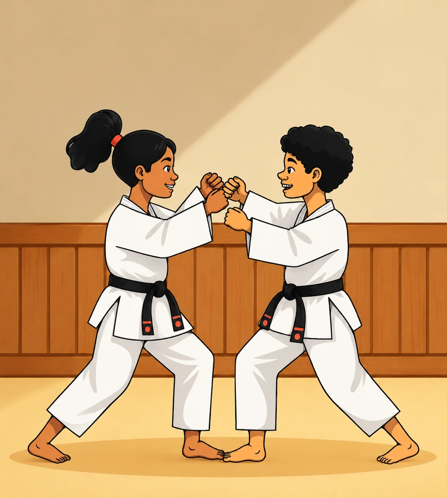
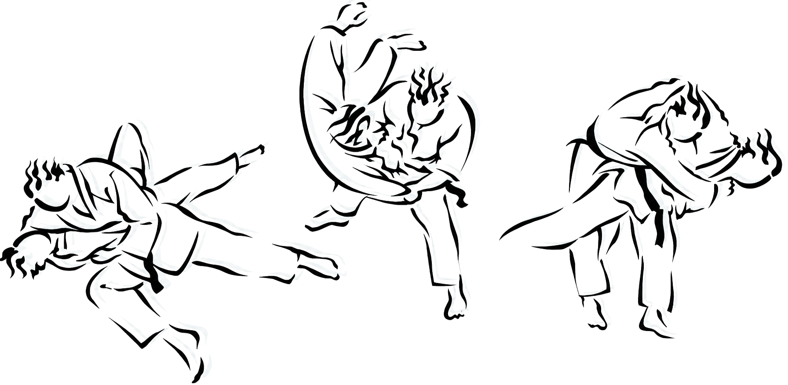

.Dès 2 ans et demi. Sur quatre dojos de Bobigny. En loisir comme en compétition.
Dès 2 ans et demi : équilibre, respect et confiance en soi — par le jeu, pieds nus sur le tatami. Les premières chutes deviennent un jeu, les copains une équipe.


七転び八起き
Au judo, on grandit autant en tombant qu’en gagnant. Ici, on apprend d’abord la persévérance, le respect et le goût de l’effort — le reste suit.